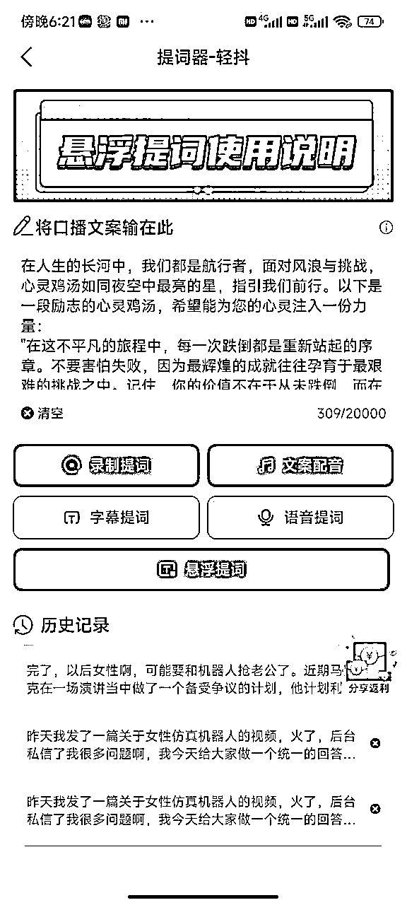

来源：https://fu92l5vu3n.feishu.cn/docx/OgF5du89qoxX4qxj2DGchnFknNh
各位圈友们大家好，我是耿一凡，目前坐标苏州，98年的年轻创业者。
我是从今年4月份正式开始做这个项目，今年也是抓住视频号这一波风口期，我和女友两个人的小团队，针对中老年群体（都市银发）售卖人工智能课，截止到9月一共卖掉800套课程，全矩阵号累计涨粉10W+，累计收益13W。
目前也是听到很多人反馈：视频号红利期已经过了，收益没有以前多了，赚钱速度也没以前快了。关于这一点我想说的是，任何一个平台都会有飞速增长的红利期，像3年前的抖音快手商业化，包括现在的视频号也是一样。进场的人越来越多，慢慢的都会趋于内卷，这是大趋势。但是对于很多垂直领域，受到趋势的影响没有那么大，还是可以做的，甚至可以做的非常好，在大红海里找到属于自己的一片小蓝海。以下就是这个项目的收益明细：
这是第一张图是卖课的收益，下面几张图是视频号直播的数据

我本人曾经是一名软件赛道的操盘手，擅长搜索引擎SEO、SEM，带领线上营销部门在知+投放，私域社群，软件领域知识付费，以及ToB软件的线索获取等项目上拿到结果。但是后续公司空降了一位高管，非常擅长向上管理，做了一系列假大空的事情，团队效率变得极低，所有人都很浮躁，数据上也没有任何增长，得了大公司病。我本人是极度讨厌这种官僚主义的，但是环境是这个样子，导致整个人变得很内耗。
也就是在这个期间，我加入了生财有术这个圈子，在里面看到很多让人眼前一亮的内容，务实、详细、利他，这不就是我最喜欢的感觉吗，这种真正的创业者的感觉。我看了不下于100个生财的实操案例，发现里面有很多项目其实也不需要很多的资源，不需要很大的团队，个人创业者也是可以做的。于是，离职创业的想法在我的心里出现了。试试嘛，反正还年轻，最差的结果不过就是创业失败了，然后再回去打工嘛！
说干就干，当月就办理的离职，开始我的创业之路。最开始也是打算做知识付费的，因为知识付费的利润比较高。首先做的是抖音，因为大家都说抖音的流量大，但是我真正在推进的过程中发现了抖音的难度之大，做了3个月都没有数据上的反馈，宣告失败。后续，我也是加入了航海项目，像抖音直播（教育），视频号中老年知识付费，视频号带货、视频号口播带货，慢慢的在不断学习中，找到了我现在的方向。
7月，我参加「视频号口播带货」航海，结束后，我在星球做了一次分享，吸引到很多志同道合的圈友，一起来交流项目。又历时3个月，扎根航海衍生了我的新项目--视频号知识付费项目。这次，我会对项目进行一次深度拆解，如果你对视频号、对知识付费感兴趣，欢迎评论区交流～
我在最开始选择赛道的时候是非常迷茫的，生财里面的项目实在是太多了，感觉很多都可以去做，但具体要做什么？选择哪个项目？不知道。后面也是无意间刷抖音的时候，发现抖音上抖音上的一些大V，知识博主都在卖人工智能课。去年也是人工智能大爆炸的一年，ChatGPT横空出世，然后什么文心一言、讯飞星火、通义千问、华为盘古大模型等一众国产AI大模型走入公众视野。当时，直觉告诉我：这个就是风口！
但是当我真正打算放手去干的时候，问题又来了，我看到的这些大V粉丝体量都在百万级，甚至是千万级的，我一个新人想完全复制这个模式肯定是不切实际的。并且抖音知识付费主要是靠投流来获量，一场直播十几万的投流费用就撒出去了。这种以我当时的情况根本没办法去碰的。所以抖音不是一个适合新人现在入场去干的平台。
相比于抖音，视频号的起步相对较晚，目前还没有绝对意义上的头部，新人进场也是可以拿到结果的。
于是，我把视野放到了视频号上，意外的发现视频号上已经有人在卖人工智能课了，而且卖的还不错，而且还是自然流。这不就是最适合我当前状态的平台吗。并且，视频号的用户以中老年人居多，很多一线二线城市的老年人对于新事物还是很有兴趣的，非常愿意付费学习。
我的方向基本上已经明确了：在视频号上为都市银发售卖人工智能课。
大方向确定，下一步就是对项目进行拆解，一步一步去落地。怎么去录课？怎么线上引流？怎么去直播？怎么去交付课程？先说第一步录课。
首先我自己最开始对于人工智能工具是有一定理解的，在此之前已经用了将近半年时间的ChatGPT辅助工作。并且AI绘画类的像Midjourney和Stable Diffusion也都会使用。我把市面上一些自媒体博主的课程都拿来看了一下，有付费课程也有免费课程，简单浏览了4套课程。发现这些教AI工具的课程其实都是大同小异的，并且以我现在掌握的知识是可以出一套30-40课时的课程的。课程大纲也是按照：AI文本、AI绘画、AI视频、AI数字人这几大板块展开的。
大纲确定之后，开始着手每节课的录制。每节课我都是写好了逐字稿，因为做不到即兴去讲课，所以逐字稿是必要的。类似于短视频口播提前写好文案一样，我的每节课都按照这样的方式。在写文案的同时梳理出本节课的要点内容以及所用到的提示词，在最后也会整理成一份完整的教材文档，随课程打包赠送给用户，在后期推广的时候，这个也是一大卖点。
课程一共花费了3周时间完成，共计38课时。并且用到的AI工具全部都是免费的。遵循低成本创业的理念，能不花钱就不花钱。免费赠送AI工具，也是我后期在直播中，重点介绍的一个福利。
课程录制完成之后，相当于是解决了产品问题。
下一步最关键的动作，也就是在视频号上引流。我的用户是都市银发，所以要发的内容一定是围绕这一个群体的用户去做。在抖音、视频号、小红书各大平台上搜索关键词，例如：养老、保姆机器人、人工智能、AI机器人、机器人传宗接代等等，一个一个去搜，搜账号，搜作品，我做的是真人口播，所以文案选择的也都是口播类的。找到1W+点赞的爆款，全部放到自己的收藏夹里。最后统一语音转文字，把这些被市场验证过的文案全部收录到自己的文案库里。
下一步，根据原文案进行适当改写。视频号目前是没有文案查重的，但是考虑到后续会多平台分发，所以会进行一个改写。这些文案都是被验证过容易爆的，所以如果再发，还是会有很大概率会爆。
对标的视频最好选择近期爆过的，并且前期新手入局，不建议对标粉丝体量太大的大V，最好的就是低粉爆款。并且，同样的文案同样的场景，不同的人出镜，效果可能是天差地别。所以前期不要因为数据不行就放弃，不同文案，不同场景多去测试。前期尽可能做到一比一复刻对标视频，先模仿，后超越。
文案整理好之后，就可以开始准备口播视频的拍摄了。因为是知识类博主，所以穿着方面尽可能正式一点，服装是最快展示个人身份的的东西。衬衫、领带、西服都可以准备上。
下一步，熟悉文案。文案一定要熟，保证在口播过程中的流畅性，文案可以多读几遍，熟悉了之后再拍摄，磨刀不误砍柴工。并且肢体语言、面部表情都尽可能去模仿对标的视频。
文案放到提词器里，提词器我使用的是轻抖，在文本框里输入事先准备好的文案，在录视频的时候，提词器会半透明悬浮在手机屏幕上半屏。
提词器需要提前设置好参数，在这里我给大家我平时使用的参数：字体大小30，速度1.6，倒计时5。

拍摄需要以下工具：手机支架、手机、手机麦克风，拍摄软件选择美颜相机APP，我下面一个一个来说。
1、手机支架能稳定固定手机即可，买长杆的，没有其他要注意的点。
2、拍摄最好使用苹果手机，如果是安卓的话，可以搭配美颜相机APP，也可以起到同样的效果。
3、手机麦克风选择200-300价位的就可以了，推荐猛犸，苹果和Type-C接口注意区分。
4、打开美颜APP，选择苹果模式，拍摄时选择光线明亮的地方，自然光最佳，美颜可以根据自己的情况选择开或不开。以下为操作步骤：
在拍摄的过程中，人物离镜头的距离非常重要，架好机位，按照对标视频的位置，进行一比一的复刻。在这里我给大家做一个参考：面部约占横向屏幕的1/3，屏幕上方留有一定的位置放置标题，下方放置字幕。实际情况大家要参考自己的对标账号来做。
口播拍摄要点：
最基础的就是保证文案朗读时的流畅性，如果能够抑扬顿挫，带有一定的情绪，就像是和你的亲朋好友对话一样，保持一个自然的状态，娓娓道来这样的一个感觉。
刚开始出镜难免会有一定的紧张感，会显得没有那么自然，一般完整拍摄3条视频之后，就会逐渐进入状态。拍摄之前，可以动动嘴巴，眨眨眼睛，有助于缓解面部的僵硬。你放松的状态在视频里面自然会有体现。
录制好完整的口播视频后，接下来就是视频剪辑，形成最终的成品。
剪辑一共分为两步：1.口播视频剪辑，2.添加画中画素材。我使用的工具是剪映。
（以下部分比较基础，有一定剪辑经验的朋友可以跳过）
先看第一步，口播视频剪辑。这一步主要是因为，我们在口播出镜的过程中难免会有一些卡顿的地方，比如开头和结尾调整镜头的画面，中间读错词的画面等等啊。这一步就是要把这些错误的地方给删掉，保证整条口播视频从头到尾是一个完整的状态。下面来讲具体的操作方法。
以下3个按钮就是分割和剪裁按钮，第一个是分割不剪裁，第二个是分割并且剪裁左侧，第三个是分割并且剪裁右侧。我们点击播放视频，找到视频中所有卡顿的地方，把它们剪裁掉。把所有卡顿的地方都剪完之后，最后完整的播放一下视频，检查视频是否完整、流畅。
这里有一个小技巧，我们可以观察视频轨道上的音量波形，如果有像下面这样整段都是没有声音的，说明这个地方肯定是有问题的，需要剪裁。
然后再看第二步，添加画中画素材。这一步主要是让视频元素更丰富，增加爆款几率。同样的，这时我们需要建立一个素材库，画中画素材后续都是可以持续使用的。在抖音、视频号、快手里，搜索关键词就可以找到。
把这些素材整理好，放进自己的素材库中，后续视频出现相关内容后就可以直接拿来使用。
视频制作并且发布完成之后，在视频号后台设置预约直播。
这个是一个核心的动作。我们通过短视频引导用户预约直播，然后开播时平台会自动提醒用户进入直播间，最终在直播间里完成转化。视频号直播预约功能非常好用，通过预约进来的用户本身就是看过我们视频的，所以这部分用户是认可我们的作品的，对于后续的转化还是非常有帮助的。
直播前需要完成课程上架、商品挂车的操作。这里可以选择自己开视频号小店，也可以入驻第三方课程平台。自己开小店需要有ICP备案，并且缴纳保证金。第三方课程平台上架课程会更简单一点，但是平台会抽取10%的佣金。
直播间也是需要找对标的，目前市场上卖人工智能课程的直播有多种形式，有直播间直接卖课的，有引流到私域转高客单的，有卖给职场人的，也有卖给都市银发的。直播脚本我参考了3个直播间，取其精华。知识付费直播间通常有2大板块：前面操作演示在用户心中种草，侧重内容。后面推出课程，侧重营销，特价、赠品、限时、价格锚定等营销手段全部加上。我是前面的操作参考一个直播间，后面的营销参考另一个直播间，并且将话术转为我自己最说出来比较顺口的，形成最终的逐字稿。刚开始直播，可能会出现像紧张啊、念错稿啊这样的问题。这个是很正常的情况。直播能力随着场次的增加而增加。
打造一个合格的直播间需要以下的工具：电脑、摄像头、麦克风、直播背景。直播间的整体氛围需要打造成明亮且文艺的风格，因为毕竟是知识博主。摄像头、麦克风买200-400价位的够用了，直播背景淘宝上搜：知识主播背景布，大概100元左右。
通常在直播预约人数达到200人以上后，就可以开启直播了。新手前期做到按照话术脚本完整直播一场即可，先完成，再完美。直播过程需要突出产品卖点：永久不限次数观看的课程+免费终身使用的AI工具+150个案例的资料包+1对1终身指导服务。
用户在直播间下单之后，需要给用户发送一条手机短信，短信里面包含一条链接，点击链接跳转到一个H5页面，里面包含课程链接以及我个人的微信二维码。用户在学习的过程中，有问题可以随时联系。
用户加微信之后需要及时对接，退款高峰期就是用户在购买课程后的2天以内。过了2天之后基本上不会有退款。用户咨询的问题通常都是比较基础的，我目前还没有遇到过解答不了的问题，用户有疑问解答即可。
此外，学员购买课程后会出现没有加微信的情况，可能有些学员年纪比较大，不能通过正确的操作加到我们微信，这一部分学员很容易退款。所以下播之后2小时内要去检查一下学员是否全部加了微信，如果没有加上，则需要人为手动搜索手机号，加上学员的微信。这一步非常重要，我也是通过这一步把退款率从15%降到8%。别小看这几个点，课程卖出100套以上会发现这个几个点还真不少。
这个模式的边际成本非常低，卖1套课程和卖100套课程成本相差不大，所以适合批量去复制。
单账号0-1跑通之后，就可以开矩阵账号，放大项目。搭建矩阵账号的方式比较简单，就是批量起号，批量发视频，批量去直播。
一个人可以实名2个视频号，这算是起号的一个卡点。因为这个模式是需要开直播的，现在视频号开直播的其中一个条件就是必须完成视频号的实名认证。视频号实名不是微信实名，微信实名1个人可以实名5个微信，但是视频号只有2个。这个就需要找到身边的人协助完成实名。账号实名必须线下进行人脸识别，不能通过线上去做。系统会识别到不是真实人脸导致失败。不用的视频号可以注销，注销完后会释放名额出来用于认证。
做矩阵账号有一个很重要的功能，就是视频号自带的原创授权功能，也就是一个账号可以授权最多5个子账号。这样这5个子账号就可以发送主账号同样的内容，并且不会被判定为非原创。在做矩阵账号的时候会发现，同样的内容，有些账号数据非常好，有些账号怎么做起不来，这个就是概率问题。把优质的号拿出来继续去做，差的号可以注销重新起号。
同样的，账号增多的时候需要借助工具来提效。使用视频号矩阵管理工具来批量发布内容，大大减少发布视频所消耗的时间。这里可能有人会问，发个视频而已，能花费多少时间？我们可以来算一算，运营1个账号，每天发布5条视频，每天就需要10分钟，乍一看好像不太费劲。但是如果变成10个账号呢，那就是100分钟，将近2个小时了。视频号矩阵工具我用的是即刻矩阵工具，这个工具也是我们生财的圈友研发的。实现批量修改视频描述、发布时间、原创声明、地点，矩阵账号视频一键发送。
作为一名创业者，深感创业的不易，赚钱确实没有之前想象的那么简单，需要掌握非常多的技能。尤其是对于像我这样的新手来说，必须要在短期内掌握大量技能。在这个过程中，执行动作会不断变形，然后回正，继续变形，继续回正。即使到了现在，我们团队的决策仍然会不定期的变形，只能说要不忘初心吧。
在心态上，每天该干嘛就干嘛，不要因为数据的变化导致情绪的太大波动。
不过做到这一点确实非常不容易，我经历过大流量的时期，也经历过默默无闻没有量的时期。高峰时期一觉醒来就是100W的播放，低谷时期发出去的内容1个点赞都没有。但是如果把时间线拉长，创业是一场长跑，拼的是耐力、身体、心力这些综合的能力。找到适合自己的方向，不断的去重复执行，把步骤拆解不断优化。从0到1是最难的，缺什么技能就去练，去学，找高人去请教，直到打通0-1的闭环，把赚钱所需的所有碎片全部收集齐，就能召唤神龙了。
多去链接高手，向高手学习请教，才能更上一层楼。
我在创业期间停滞不前时，也是在机缘巧合之下，结实了圈里的一位大佬陈锦奕，向他请教学习视频号自然流的相关玩法，很多节点茅塞顿开，如拨云见日。并且，在航海期间也认识了汪淼教练，同样是做视频号知识付费，向他请教了许多业务细节的问题，他们也是毫无保留，全部跟我做了分享。所以不得不感慨，生财这个圈子真的是宝藏圈子，里面藏龙卧虎，有时候链接到一位大佬，与其深入沟通之后，可以解决自己在做业务过程中的很多难点，少走很多弯路。
任何项目都是有他的周期性的，从最开始的大蓝海，爆发式的增长，到后续的数据平稳期，再到衰落期，目前这个项目正处于平稳期。视频号口播不如7月份好做，这里的不好做主要体现在很难出现百万级以上的大爆款，爆发式增长的阶段已经过去了。依赖爆款的模式一定是不长久的，可以长期稳定的项目才是最好的。这个项目正处于平稳期，还是可以做的，我目前是招了一位全职帮我运营的人员，人员的工资成本完全可以cover住，并且还有不少的净利润，真正实现“睡”后收入。
做短视频，尤其是自然流，不爆是常态，爆量是变态。
接受初始默默无闻的阶段，用心完成前面100条作品，剩下的交给平台。做口播，细致到逐帧拉片，尽最大可能去还原对标的视频。对于关键的动作，不断的去重复。前期不要有太大的变化，对标做什么，你就做什么，否则动作很容易变形。我之前和一位拿到过大结果的创业者聊过，他说：新手创业者不用想这一开始就能赚100W，1000W，目标定太高会很容易导致内耗。创业可以分为3个阶段，第1次创业我们就赚取1年的生活费，第2次我们赚取10年的生活费，第3次赚100年的。小步快跑，刚开始咱们先跑起来再说。
以上就是项目的全部分享了，相信经过你的实操，可以打通全部节点，拿到结果！